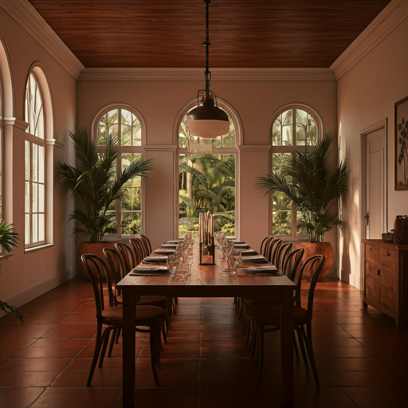
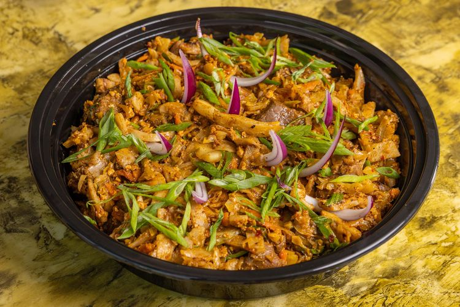
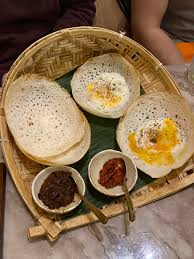
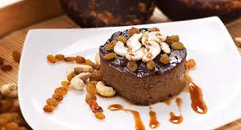
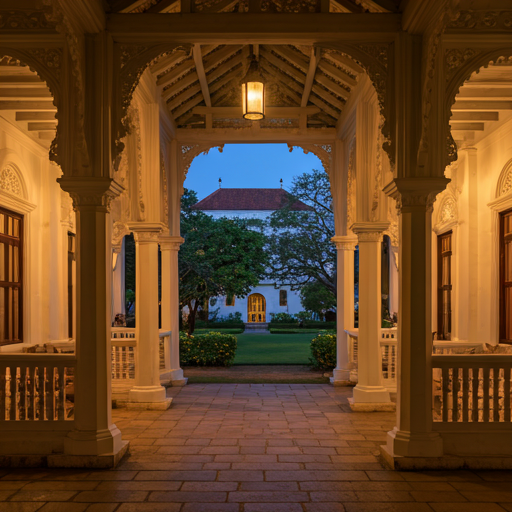

Galle Fort · Sri Lanka
Taste the Soul
of Sri Lanka
Authentic flavors, colonial charm and the warmth of the South.
Welcome to Galle Fort Kitchen.
Most Popular Dishes
The dishes our guests keep coming back for.

⭐ #1 FavouriteKottu
Crispy shredded roti stir-fried with vegetables, egg and our signature spice blend. A Sri Lankan street food icon.
LKR 1,200
⭐ Must TryHoppers
Bowl-shaped crispy rice and coconut milk crepes. Served with sambol and dhal — a true morning classic.
LKR 800
⭐ Chef's PickWatalappam
Traditional jaggery and coconut milk custard pudding spiced with cardamom and nutmeg. A Fort dessert treasure.
LKR 650
A Legacy of Flavor
Nestled in the heart of the historic Galle Fort, Spice Harbor brings the rich culinary heritage of Sri Lanka to your table. Our kitchen is guided by traditional recipes passed down through generations of southern Sri Lankan families.
Every dish is prepared fresh daily using locally sourced spices, coconut, and seafood from the Galle harbor. We believe the best food tells a story — and ours is one of warmth, heritage and the spirit of the South.
"If it doesn't smell like our grandmother's kitchen, we start again."